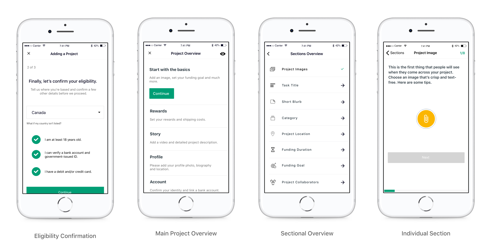
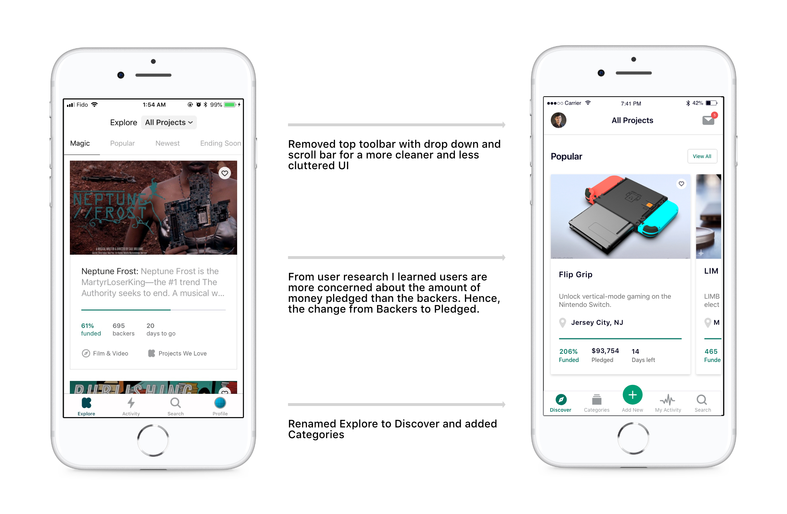
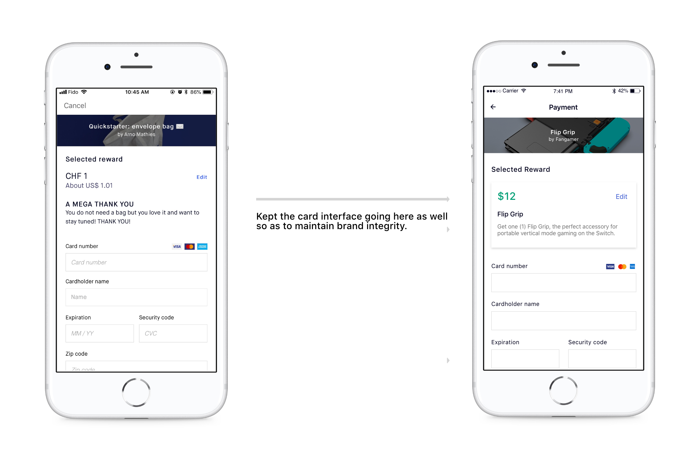
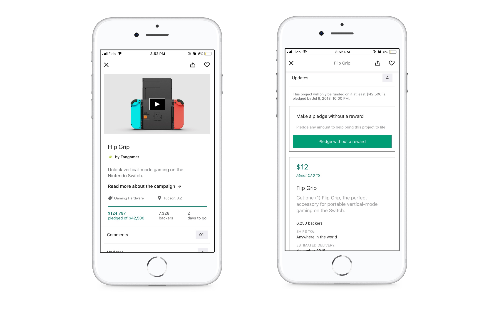
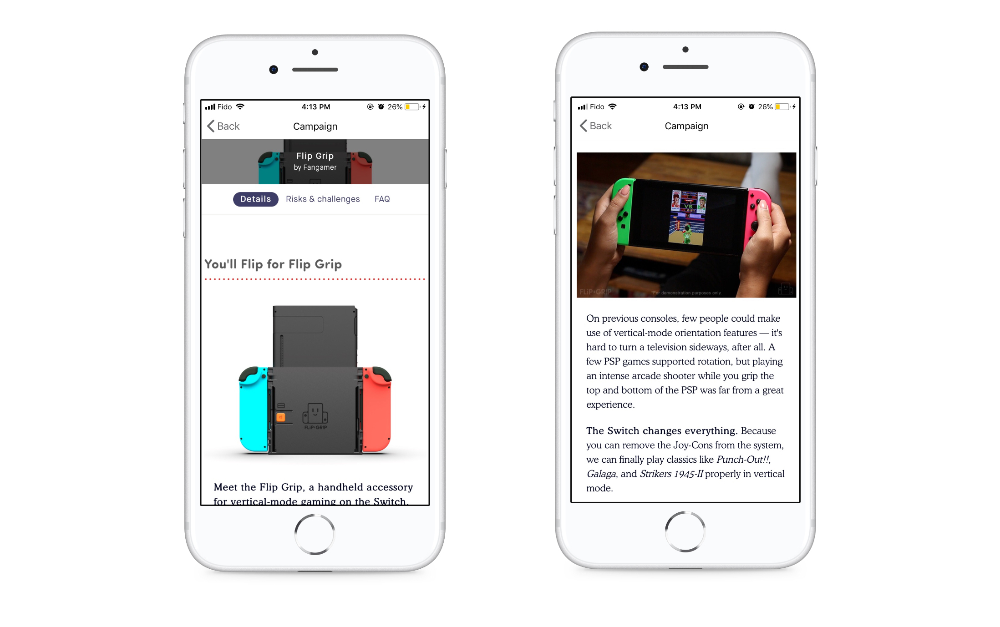

My updated navigation is a new experience made to bridge the gap between Backers and Contributors, replacing the current “top toolbar dropdown”. It was born out of the understanding that users who are picky about how they decide what category to select and what displays on their discover feed.
The scrollable bar under the toolbar was also not gesture friendly for users. According to Apple Design Guidlines, it is not recommended to add a top navigation and bottom in the same screen. Kickstarter however has three navigation channels on the same page which just leads to a cluttered page that ultimately leaves the users experience confusing.
A better experience would be presenting the categories as a whole new tab in the bottom navigation - which gives the user just enough flexibility to easily navigate to and decide the categories of their liking without stretching their thumb. The homepage was also redesigned to showcase the larger typography by segregating the page into 4 sections which were originally on the scrollable bar on the top.
Additionally the current inbox which was the only way for contributors to access information about their campaigns was nestled away inside the profile. Profile itself was extremely similar to Activity and did not need a seperate spot on the bottom navigation. Take a look at the current flow below:
After looking at different options, I finally settled on bringing the profile and inbox right at the top of the homepage. I realize this goes against the arguments I have made above about uncomofortable gestures, however inbox and profile are pages not that often visited and thus will be less problematic for the user on the toolbar.
The mechanics behind this experience was inspired by the following quotes captured during interviews:
I have come to understand that, through a more user friendly bottom navigation, the user is able to establish an immediate connection to the projects they discover. In addition, the inbox moving to the front has the potential to provide the user a chance to interact with others all the while making it more user friendly for project campaigners. Eventually allowing the app to evolve and grow with the user.
2. New Feature - Adding Campaigns
One of the main concerns I heard from Project Campaigners was that they could not post campaigns on the go from their phone. They did acknowledge the mobile version of the website allows this but the font was too shrunken for them to enjoy the experience. After some user research and studying competitor models, I devised a unique user flow for the campaign setup wizard.
Once I devised the user flow, I did a couple of sketches and descended into the visual design. I'll be explaining each screen in detail below but to get started here are what the final screens will look like:

Eligibility Confirmation
I designed this section to be an almost exact replica to the websites user flow including the marketing screen to explain the benefits of campaigning with Kickstarter. The reason being is to continue brand familiarity across platforms. There are three steps to elgibility confirmation following which the user is directed to the main project overview.
Project Overview
The project overview is a one stop editor to jump between the five different sub sections. The overview gives the user the flexibility to jump in and out of a sub section and also at same time have their progress saved automatically saved.
Subsection overview & Individual section
From the subsection overview, users can criss cross between different individual sections. This benefits the user by allowing them to tackle sections they are comfortable with and tackle the more challenging ones in their own time. As always all progress is automatically saved for future use.
Full Campaign Wizard animation
Just to bring the whole thing together, please find the entire campaign adding experience below (apologies for the long video). If you'd like to interact with the screens yourself, please find the graphical prototype: here
.
I think this new feature harmonizes well with the rest of the UI, and am curious to see if the circular plus icon motif could also be somehow animated upon user input…
3. Visual Interface
General Improvements
The chief complaint I heard about the current interface was that it felt too sterile and lacked an element of delight. To begin resolving this, I optimized white space through subtle app-wide adjustments as demonstrated below:


Campaign expanded
Upon clicking a card on the discover page, users are directed to the campaign information page. From user research I learned users were most concerned about only reading about the rewards in store for them if they decided to back the campaign. However, the reward section was in the bottom of the screen accessible only through a slight scroll. The scroll also blocked the second
most important aspect - The snapshot data. Take a look below to see how it currently is:

The redesign uses the principle of Segmented Controls. This ultimately allows more clarity and forces more interactivity with the screen from the user.
The mechanics behind this experience was inspired by the following quote captured during interviews:
To be honest I don't think I'll ever read the entire information presented, I'm just here to see the kind of rewards and if it'll be feasible for me to back the project.
Reading more information
Users had a very useful section navigator at the top of the screen however upon scrolling down the navigator gets hidden forcing the user to scroll up for at times nearly 3-4 seconds before reaching the top. Take a look below:

I did not change much to this screen - cleaned up the navigator and made it a fixed position on scroll.
Search
The search was nearly perfect, the only issues users faced was the inifinite scroll. They were discourged to keep scrolling past the second page to find relevant campaigns to their liking. Take a look below:
Once again the redesign uses the principle of segmented controls. I introduced three sections - Most popular, Most funded & Ending soon. With these controls users are not simply scrolling down a screen but can spend time on projects that are relevant for them.
The mechanics behind this experience was inspired by the following quote captured during interviews:
I wish there was a way to filter my searches!
My Activity
My activities was redesigned to solely show the updates regarding uploaded campaigns. The reasoning behind is, both sets of users can be encouraged to start a campaign while strentegning the mobile reach for project campaigners. The addition of this feature doesn't change the current experience for project backers/discoverers, hence it will not affect their usage.
As activities were redesigned primarily only for Project Campaigners to check on their projects, to see backed projects, users can easily navigate to their profile from the home page. The screen has two sections - Live Campaigns & Campaign History. Users can toggle between the options using a segmented control as shown below:
Conclusion
Looking back at the initial scribbles I made on my notebook during my initial brainstorming sessions, I’m happily surprised at the amount of progress I was able to make in one month.
Through this project, I have come to understand the value of my product management background in relation to UX design — experience designers and product managers are alike in their shared understanding of human empathy.
I don’t expect the good folks at Kickstarter to take anything from this case study. Ultimately, This project was carried out as a personal study of interactivity to showcase my proactivity and creativity to the team at Kickstarter.
All Kickstarter logos and references are property of Kickstarter, and used here for demonstration purposes only.
{kind=link}
{kind=link}
{kind=link}
{kind=link}
{kind=link}
{kind=link}
{kind=link}
{kind=link}
{kind=link}
{kind=link}
{kind=link}
{kind=link}
{kind=link}